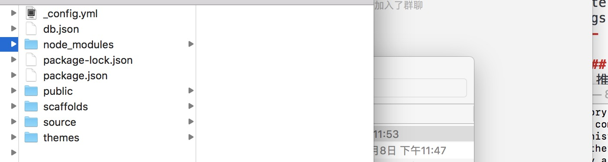
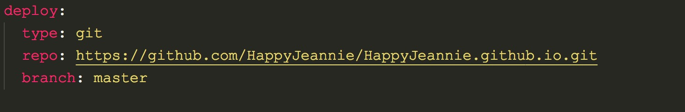
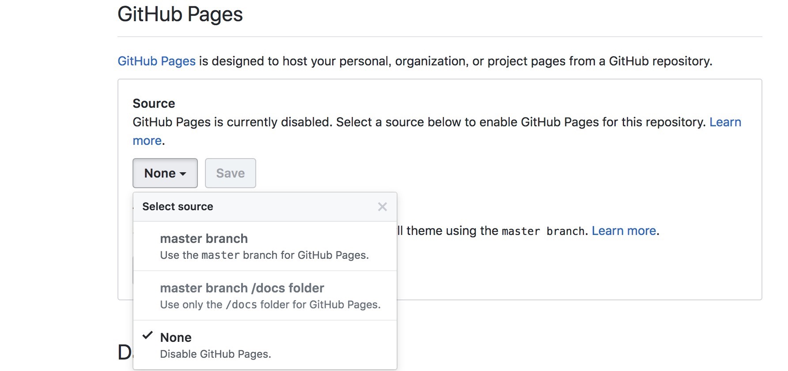

本文会详细介绍hexo+github搭建博客的过程。由于此博客于17年11月底搭建，具体操作步骤可能会有遗漏，如果讲述的不清楚的地方敬请指正。在搭建博客之前，需要安装node和git，具体操作请参考上一篇文章,node和git版本分别为v8.7.0和v2.16.2，MacOs，并同时申请Github账号。使用的开发工具为VScode。
一、安装Hexo
1、首先创建一个文件夹如blog，用于存放整个博客文件。在菜单栏中选中文件夹，右键然后选中在终端中打开，即可在当前vscode打开终端。大家可以根据自己的项目目录打开到blog文件夹下。
2、执行如下命令安装Hexo：1
2
3
4sudo npm install -g hexo //安装hexo
hexo init //初始化hexo,这样blog就是整个博客的根目录，所有的页面都在里面进行增删改
hexo generate //生成静态页面
hexo server //启动本地服务器，进行博客文章预览
在浏览器下打开localhost://4000即可预览，hexo应该会默认生成一篇博客《Hello World》。
博客整体目录预览：

其中_config.yml和package.json为项目的配置文件，source->_post为我们的博客目录，public为执行hexo generate后生成的静态页面。
二、关联Github
1、在你的Github中建立新的仓库，仓库名为8、【your_user_name.github.io】（敲重点，必须一样），此处我创建的仓库名为：
HappyJeannie.github.io，然后与我们的博客建立关联。
2、打开blog(项目目录)目录，将_config.yml文件在VScode中打开，翻到最下面，找到depoly，修改其配置信息如下：

修改完成后在终端执行：1
2npm install hexo-deployer-git --save //安装 git 部署插件
hexo deploy //将本地博客代码部署到Github
3、将本项目所在仓库中，开启 GitHub Pages功能，具体操作为打开仓库->settings，如下图所示：

选中master branch并点击save即可。
三、tips
1、_config.yml中的缩进和空格一定严格按照文件的默认格式来，不然会报错；
2、想要删除博客的话，直接删除source->_posts->对应的博客文章，然后在执行hexo generate、hexo deploy即可；
3、在_config.yml中修改language为zh-CN，即可将博客中英文转换为中文；
4、常用命令1
2
3
4
5
6hexo new "postName" //新建文章
hexo new page "pageName" //新建页面
hexo server //启动本地服务器
hexo generate //生成静态文件
hexo deploy //部署到Giihub
hexo help //查询帮助
5、插入图片
在hexo中，所有图片保存在public->css->images文件夹下，页面引入路径为：1
./../../../../css/images/xxx.png
6、markdown语法查询；